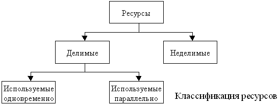
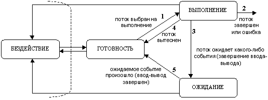
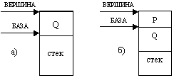
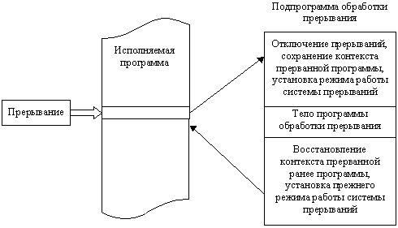
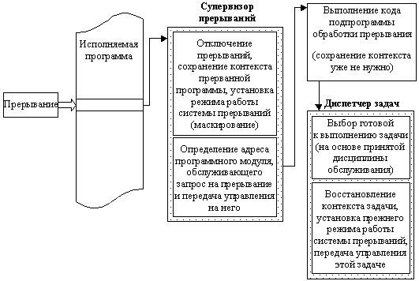

Под операционной системой (ОС) понимается организованная совокупность управляющих и обрабатывающих программ, как обычных, так и микропрограмм, которая действует как интерфейс между аппаратурой ЭВМ и пользователем. ОС – неотъемлемая часть любого компьютера. Ни один из компонентов программного обеспечения, за исключением самой ОС, не имеет доступа к аппаратуре компьютера.
В состав ОС входят: драйверы устройств; командный процессор; программные модули, создающие пользовательский интерфейс; программный модуль, управляющий файловой системой; сервисные программы, или утилиты; справочная система.
Задачи ОС заключаются в том, чтобы:
В рамках первой задачи ОС обеспечивает взаимодействие программ с внешними устройствами и друг с другом, распределение оперативной памяти, выявление различных событий, возникающих в процессе работы, и соответствующую реакцию на них (например, при ошибочных ситуациях).
Общее управление машиной осуществляется на основе командного языка (языка директив), с помощью которого человек может осуществлять различные операции, например, такие, как разметка дисков, копирование файлов, запуск программ, установка режимов работы дисплея, принтера и т.п. При этом команды могут применяться как в явном виде (ввод команды в командной строке), так и посредством системы меню.
Главное назначение ОС – управление ресурсами компьютера. Операционная система управляет следующими основными ресурсами: процессорами, памятью, устройствами ввода/вывода, данными (подробнее различные виды ресонтрольн будут рассмотрены далее). При этом операционная система реализует следующие функции:
Операционная система взаимодействует с:
Операторы ЭВМ – это специально подготовленные люди, которые контролируют работу ОС и в случае необходимости (поступление запроса) вмешиваются в работу компьютера для устранения каких-либо препятствий.
Прикладные программисты разрабатывают программные приложения, используя возможности ОС, предоставляемые ею для проектирования и отладки программ.
Системные программисты занимаются сопровождением ОС, осуществляют её настройку применительно к требованиям конкретной машины и при необходимости доработку для обслуживания новых типов устройств.
Администраторы систем устанавливают порядок работы на ЭВМ и взаимодействуют с ОС, чтобы обеспечить соблюдение принятого порядка.
Программы обращаются к модулям ОС при помощи специальных команд (вызов монитора, супервизора и т.п.), не нарушающих её целостности и работоспособности.
Пользователи – это абоненты вычислительной сети.
Операционной системе, как правило, присваивается статус самого полномочного пользователя. Она имеет возможность доступа ко всем видам аппаратных ресонтрольн, всем программам пользователя, данным и т.п.
В различных моделях ЭВМ используются ОС с разной архитектурой и возможностями; для их работы необходимы различные ресурсы; они предоставляют разную степень сервиса для программирования и работы с готовыми программами.
1) Наиболее простая ОС предоставляет пользователю только самый необходимый набор средств для управления ресурсами ПЭВМ, доступа к файловой системе и организации диалога и обычно ставится на 8-разрядной ПЭВМ. Обеспечение интерфейса пользователя, взаимодействие с внешними устройствами и другие функции возлагаются на прикладные программы. Такие ОС не дают особых возможностей для системных программистов и применяются на дешевых компьютерах (например, семейство СР/М).
2) ОС с более развитыми средствами доступа ко всем аппаратным компонентам, гибкой файловой системой, основанной на иерархической структуре каталогов, удобным командным языком обычно устанавливается на 16-разрядной ПЭВМ. Средства таких ОС позволяют формировать удобную операционную обстановку для разработки программного обеспечения (ПО); с другой стороны, на их основе легко создавать автоматизированные рабочие места с простыми средствами доступа пользователей к прикладным программам (например, семейство MS-DOS).
3) ОС, ориентированные на эффективную поддержку процесса разработки ПО, имеют развитую файловую систему и мощный командный язык, обеспечивают программирование доступа ко всем типам внешних устройств, как и в ОС 2 класса. Кроме того, в состав этих ОС входит множество служебных программ (утилит), обеспечивающих выполнение разнообразных функций, потребность в которых возникает в процессе разработки ПО. В отличие от предыдущего класса, имеется возможность организации одновременной работы нескольких пользователей с отдельных терминалов. Системы этого типа требуют довольно значительных ресонтрольн, что не всегда оправданно с точки зрения конечного пользователя, занятого решением своих профессиональных задач (например, семейство UNIX).
4) Особый класс – это ОС, ориентированные главным образом на поддержку удобной работы конечных пользователей – имеют развитые средства поддержки диалога, систему меню, используют графику, дисплейные окна, специальные манипуляторы типа "мышь" для выбора объектов и операций над ними (например, семейство WINDOWS).
Контрольные вопросы
1. Что является основной функцией операционной системы (ОС)?
2. Какие составные компоненты входят в состав любой ОС?
3. Взаимодействуют ли с ОС программы пользователей?
4. Верно ли следующее утверждение: «ОС нужна только для распределения ресонтрольн вычислительной машины»?
5. Входит ли в функции операционной системы предоставление программисту дополнительных возможностей по разработке и отладке программ и взаимодействию с аппаратурой?
6. Верно ли следующее утверждение: «Пользователю совершенно безразличны особенности ОС, установленной на его компьютере»?
7. Какие возможности для управления машиной предоставляет ОС пользователю?
В первых вычислительных системах все подсистемы и устройства компьютера управлялись центральным процессором, поэтому процессор не мог выполнять вычислений, пока осуществлялся обмен данными между оперативной памятью и внешними устройствами. Введение в состав машины специальных контроллеров внешних устройств позволило распараллелить операции ввода/вывода данных с вычислениями на центральном процессоре. Но все равно выполняющаяся программа только малую часть от всего времени своей работы занимала процессор, а большую часть времени процессор продолжал простаивать, дожидаясь окончания очередной операции ввода/вывода из-за существенного различия в скоростных характеристиках устройств ввода/вывода и ЦП. Поэтому и было предложено организовать мультипрограммный (мультизадачный) режим работы вычислительной системы, при котором, пока одна программа ожидает завершения очередной операции ввода/вывода, другая задача может быть поставлена на решение.
В мультипрограммных вычислительных системах (ВС) в оперативной памяти находится одновременно несколько программ, а центральный процессор быстро переключается с выполнения одной программы на другую.
Операционные системы второго поколения можно подразделить на системы разделения времени и системы реального времени.
Системы разделения времени предоставляют пользователю возможность непосредственно взаимодействовать с компьютером при помощи терминалов, они функционируют в интерактивном (диалоговом) режиме. При этом исправление ошибок в программах осуществляется за минуты или секунды вместо часов и дней в системах пакетной обработки, что способствует повышению производительности труда программиста. (MULTICS, TSS IBM).
Системы реального времени используются при управлении технологическими процессами или объектами, в бортовых вычислительных системах и т.п. Такие ОС часто работают с недогрузкой, т.к. для них основное требование – быть в состоянии постоянной готовности и быстро реагировать на предусмотренные события (CP-67/CMS фирмы IBM; VMOS фирмы RCA).
Универсальность этих систем обусловила их громоздкость и дороговизну. Для работы с ними пользователю приходилось изучать сложные языки управления заданиями, чтобы уметь описывать задания и требуемые ресурсы (UNIX).
Персональные компьютеры оснащаются интерфейсными средствами приема-передачи данных и могут использоваться в качестве терминалов мощных ВС. При этом усложнились проблемы защиты информации от возможного несанкционированного доступа.
Операционные системы четвертого поколения имеют следующие особенности:
К началу 90-х гг. практически все ОС стали сетевыми. Сетевые функции встраиваются в ядро ОС. Появились специализированные ОС, которые предназначены исключительно для выполнения коммуникационных задач.
Во второй половине 90-х гг. все производители ОС резко усилили поддержку средств работы с Интернетом. Компьютер превратился из чисто вычислительного устройства в средство коммуникаций с развитыми вычислительными возможностями.
Особое внимание в последнее 10-летие уделялось корпоративным сетевым ОС. Такая ОС отличается способностью хорошо и устойчиво работать в крупных сетях, характерных для больших предприятий, имеющих отделения в десятках городов и в разных странах. Корпоративная ОС должна беспроблемно взаимодействовать с ОС разных типов и работать на различных аппаратных платформах. Очень велика роль единой справочной службы, важное значение имеют средства обеспечения безопасности ОС. Большое внимание уделяется повышению удобства работы человека.
Современная ОС наряду с выполнением основных функций (эффективное управление ресурсами, обеспечение удобного интерфейса для пользователя и прикладных программ) должна поддерживать мультипрограммную обработку, виртуальную память, многооконный графический интерфейс пользователя и выполнять многие другие функции. Кроме того, ОС должна удовлетворять следующим эксплуатационным требованиям:
В зависимости от выбранного критерия эффективности ОС делятся соответственно на системы пакетной обработки, системы разделения времени и системы реального времени. Каждый тип ОС имеет специфические внутренние механизмы и особые области применения. Некоторые ОС могут поддерживать одновременно несколько режимов.
Системы пакетной обработки
Главным критерием эффективности таких систем является пропускная способность, следовательно, главной целью является минимизация простоев всех устройств компьютера, и, прежде всего, центрального процессора.
Для достижения этой цели используется следующая схема функционирования. В начале работы формируется пакет заданий, каждое задание содержит требования к ресурсам. Из этого пакета выбирается мультипрограммная смесь, т.е. множество одновременно выполняемых задач. Критерием отбора здесь является наличие разных требований к ресурсам, так, чтобы обеспечивалась сбалансированная загрузка всех устройств вычислительной машины. Например, вычислительные задачи группируются с задачами с интенсивным вводом-выводом. Выбор нового задания из пакета зависит от внутренней ситуации, т.е. выбирается "выгодное" задание.
Максимальный эффект ускорения достигается при наиболее полном перекрытии вычислений и ввода-вывода. Общее время выполнения смеси задач оказывается меньше, чем суммарное время их последовательного выполнения. Но выполнение отдельной задачи может занять больше времени, чем требуется при монопольном выделении ей процессора. При совместном использовании процессора могут возникнуть ситуации, когда задача готова выполняться, но ждет освобождения процессора, т.к. он занят другой задачей – это удлиняет срок её выполнения.
В системах пакетной обработки переключение процессора с одной задачи на выполнение другой происходит по инициативе самой активной задачи (например, когда она отказывается от процессора из-за необходимости выполнить операцию ввода-вывода). Следовательно, возможен монопольный захват процессора одним процессом, который по какой-либо причине (например, зацикливание) не может передать управление.
Системы разделения времени
Пользователю предоставляется возможность интерактивной работы сразу с несколькими приложениями. Для этого каждое приложение должно регулярно получать возможность "общения" с пользователем.
Эта проблема решается за счёт того, что ОС периодически принудительно останавливает приложения, не дожидаясь, когда они добровольно освободят процессор. Всем приложениям попеременно выделяется квант процессорного времени, следовательно, ни одна задача не может занять процессор надолго и поэтому время ответа оказывается приемлемым. Пропускная способность у таких систем ниже, т.к. решаются, может быть, "невыгодные" задачи, теряется время на переключение процессора с одного процесса на другой. Но зато повышается удобство и эффективность работы пользователя.
Системы реального времени
Эти системы предназначены для компьютерного управления различными технологическими объектами (станок, спутник) или технологическим процессом (доменный процесс, ядерный реактор). Основной особенностью таких систем является обеспечение обработки поступающих заданий в течение заданных интервалов времени, которые нельзя превышать. Существует предельно допустимое время, в течение которого должна быть выполнена та или иная управляющая объектом программа. Заранее заданные интервалы времени между запуском программы и получением результата называются временем реакции системы. Требования ко времени реакции зависят от специфики процесса.
В системах реального времени мультипрограммная смесь представляет собой фиксированный набор заранее разработанных программ, вся информация о которых известна ещё до поступления запросов. Выбор программы на выполнение осуществляется по прерываниям (исходя из текущего состояния объекта) или в соответствии с расписанием плановых работ. Способность аппаратуры компьютера и ОС к быстрому ответу зависит от скорости обработки сигналов прерывания, следовательно, разработчики систем реального времени не стремятся максимально загружать все устройства. Наоборот, при проектировании закладывается некоторый "запас" вычислительной мощности на случай пиковой нагрузки.
Для персональных компьютеров одной из наиболее известных ОСРВ является QNX.
Последовательный процесс (иногда называемый задачей) – это выполнение отдельной программы с её данными на последовательном процессоре.
Примеры процессов: прикладные программы пользователей; утилиты и другие системные обрабатывающие программы; редактирование какого-либо текста; трансляция исходной программы, её компоновка, исполнение. Причем трансляция какой-либо программы является одним процессом, а трансляция следующей программы – уже другим процессом, поскольку, хотя транслятор как объединение программных модулей и выступает как одна и та же программа, но данные, которые он обрабатывает, являются разными.
В современной терминологии существуют разные трактовки понятий «процесс» и «поток». Мы будем пользоваться следующей.
В настоящее время в большинстве ОС выделены 2 типа единиц работы – это процессы и потоки. Более крупная единица работы носит название процесса (или задачи), и может требовать для своего выполнения нескольких более мелких работ, называемых потоками (или нитями, тредами).
Процесс рассматривается операционной системой как заявка на потребление всех видов ресонтрольн, кроме одного – процессорного времени. Процессорное время ОС распределяет между потоками. Потоки возникли в ОС как средство распараллеливания вычислений в рамках одного приложения. Понятию «поток» соответствует последовательный переход процессора от одной команды программы к другой. Каждому процессу ОС назначает отдельное адресное пространство и набор ресонтрольн, которые совместно используются всеми его потоками. Тем самым осуществляется обособление одного процесса от другого и взаимодействие его потоков.
Мультипрограммная ОС вместе с выполняемыми на ней задачами пользователя может быть логически описана как набор процессов, которые взаимодействуют между собой путём пересылки сообщений и синхронизирующих сигналов и состязаются за использование ресонтрольн. Об этих процессах говорят, что они протекают параллельно.
При этом параллелизм может быть:
Эффект псевдопараллельной работы процессора достигается за счёт выделения задачам квантов процессорного времени.
Ресурсы могут быть разделяемыми, когда несколько процессов могут их использовать одновременно (в один и тот же момент времени) или параллельно (в течение некоторого интервала времени процессы используют ресурс попеременно), а могут быть и неделимыми (см. рисунок).

При разработке первых систем ресурсами считались процессорное время, память, каналы ввода/вывода и периферийные устройства. Впоследствии это понятие стало более общим и в настоящее время понятие ресурса превратилось в абстрактную структуру с целым рядом атрибутов, характеризующих способы доступа к этой структуре и её физическое представление в системе. Помимо системных ресонтрольн, к ресурсам относят также такие объекты, как сообщения и синхросигналы, которыми обмениваются задачи.
В вопросе выделения ресонтрольн необходимо различать системные управляющие процессы, представляющие работу супервизора ОС, от всех других процессов: системных обрабатывающих процессов, которые не входят в ядро ОС, и процессов пользователя. Для системных управляющих процессов в большинстве операционных систем ресурсы распределяются изначально и однозначно. Эти процессы управляют ресурсами системы, за использование которых конкурируют все остальные задачи. Поэтому исполнение системных управляющих программ не принято называть процессами, этот термин применим к задачам пользователей и к системным обрабатывающим процессам. Но это справедливо не для всех ОС. В микроядерных ОС (например, в системе реального времени QNX) управляющие программные модули и драйверы ОС имеют статус высокоприоритетных процессов, которым выделяются соответствующие ресурсы.
Современные ОС поддерживают мультипрограммирование и стараются эффективно использовать ресурсы путем организации к ним очередей запросов, составляемых тем или иным способом.
Общая схема выделения ресонтрольн такова:
Ресурс может быть выделен задаче, обратившейся к супервизору с соответствующим запросом, если:
Если в системе имеется некоторая совокупность ресонтрольн, то управляют их использованием на основе определенной стратегии. Стратегия подразумевает четкую формулировку целей, следуя которым можно добиться эффективного распределения ресонтрольн:
Рассмотрим основные виды ресонтрольн и способы их разделения.
1) Одним из важнейших ресонтрольн является сам процессор, точнее, процессорное время. Процессорное время делится попеременно (параллельно). Существует множество методов разделения процессорного времени; они будут рассмотрены в третьей главе.
2) Второй вид ресонтрольн вычислительной системы – оперативная память (ОП), которая может быть разделена и одновременным способом (в памяти одновременно может располагаться несколько потоков), и попеременно (в разные моменты времени память может предоставляться для разных вычислительных процессов).
3) Внешняя память (например, память на магнитных дисках) и доступ к ней считаются разными видами ресурса, каждый из которых может предоставляться независимо от другого. Но для полной работы с внешней памятью необходимо иметь оба этих ресурса. Собственно внешняя память может разделяться так же, как и ОП, а доступ к ней – только попеременно.
4) Внешние устройства, которые, как известно, также являются ресурсами, могут разделяться параллельно в случае, если используются механизмы прямого доступа. Если же устройство работает с последовательным доступом, то оно не может считаться разделяемым ресурсом. Например, принтером или накопителем на магнитной ленте невозможно воспользоваться попеременно двум параллельно выполняющимся потокам.
5) Важным видом ресонтрольн являются программные модули, и прежде всего – системные программные модули.
Однократно используемые модули правильно выполняются только один раз (выполняются на этапе загрузки ОС) и являются неделимым ресурсом. Они обычно вообще не распределяются как ресурс системы.
Повторно используемые программные модули могут быть непривилегированными, привилегированными, реентерабельными и повторно входимыми.
6) Информационные ресурсы, т.е. в качестве ресонтрольн могут выступать данные. Они могут существовать как в виде переменных, так и в виде файлов. Если потоки используют данные только для чтения, то такие информационные ресурсы можно разделять. Если же потоки могут изменять данные, то необходимо организовывать работу с ними особым образом, что будет рассмотрено далее.
ОС выполняет планирование потоков, принимая во внимание их состояние. В мультипрограммной системе поток может находиться в одном из трех основных состояний:
Замечания
1. Первые два состояния возможны и в однопрограммном режиме, а третье – только в мультипрограммном.
2. В состоянии выполнения в однопроцессорной системе может находиться одновременно не более одного потока, а в состоянии готовности или ожидания – несколько потоков, образующих очередь. Очереди потоков образуются путем объединения в списки описателей отдельных потоков.
Существуют разные точки зрения на статус указанных состояний. Если рассматривать понятие ОС обобщенно (включая сюда и ОСРВ), в активном состоянии поток участвует в конкуренции за использование ресонтрольн вычислительной системы, а в пассивном он только известен системе, но в конкуренции не участвует, хотя его существование в системе и связано с предоставлением ему оперативной и/или внешней памяти. С этой точки зрения, все названные состояния являются активными. Тогда пассивное состояние (состояние бездействия) может существовать только в ОС реального времени, где расписание задач для выполнения известно, поэтому для них заранее заводят дескрипторы задач.
Согласно другой точке зрения, которой мы и будем придерживаться, только выполнение является активным состоянием потока, а блокирование и готовность – его пассивными состояниями.
Каждый поток за время своей жизни неоднократно переходит из одного состояния в другое в соответствии с алгоритмом планирования потоков, принятым в данной ОС.
Рассмотрим такой переход. (см. схему)

Только что созданный поток готов к выполнению и стоит в очереди к процессору. Когда в результате планирования принимается решение об его активизации, он переходит в состояние выполнения (переход 1 на рисунке). В этом состоянии он находится до тех пор, пока либо он сам освободит процессор (завершится – переход 2 или перейдет в состояние ожидания какого-либо события – переход 3), либо будет приостановлен (переход 4) вследствие окончания отведенного ему кванта времени. В состояние готовности поток переходит из состояния ожидания после того, как ожидаемое им событие произойдет (переход 5).
Из состояния бездействия в состояние готовности поток может перейти в следующих случаях:
Последние два способа запуска задачи характерны для ОС реального времени.
Из состояния выполнения поток может выйти по одной из следующих причин:
При наступлении соответствующего события поток деблокируется и переводится в состояние готовности. Т.о., главной движущей силой, меняющей состояния процессов, являются события, одним из основных видов которых являются прерывания.
Рассмотрим механизмы управления, которые позволяют компьютеру, с одной стороны, обеспечивать определенную дисциплину выбора задач, а с другой – взаимодействовать с внешним миром и обмениваться с ним информацией.
Описатель процесса
Для управления процессами ОС должна располагать информацией о них. На каждый процесс при его создании заводится специальная информационная структура, содержащая все сведения о нём и называемая дескриптором процесса (описателем задачи, блоком управления задачей).
Примерами описателей процесса являются блок управления задачей TCB(Task Control Block) в OS/360, управляющий блок процесса PCB (Process Control Block) в OS/2, дескриптор процесса в UNIX, объект-процесс (object-process) в Windows NT.
В общем случае дескриптор процесса содержит следующую информацию:
Описатели задач, как правило, располагаются в оперативной памяти с целью ускорить работу супервизора, который организует их в списки (очереди) и отображает изменение состояния процесса перемещением соответствующего описателя из одного списка в другой. Для каждого состояния (кроме состояния выполнения в однопроцессорной системе) ОС ведет список задач, находящихся в этом состоянии. Для состояния ожидания может существовать столько очередей, сколько различных видов ресонтрольн могут вызывать состояние ожидания.
В некоторых ОС количество описателей определяется жестко и заранее (на этапе генерации ОС или в конфигурационном файле, который используется при загрузке ОС), в других система может по мере необходимости выделять участки памяти под новые описатели. Например, в OS/2 максимально допустимое количество описателей задач определяется в конфигурационном файле CONFIG.SYS (например, THREADS=1024), а в WindowsNT оно в явном виде не задается. Заметим, что здесь речь идет о количестве задач, под которыми понимают как собственно процессы, так и потоки этого процесса
В ОС реального времени количество процессов, как правило, фиксируется, и, следовательно, возможно на этапе генерации или конфигурирования ОС определять количество дескрипторов. Для более эффективной обработки данных в системах реального времени целесообразно иметь постоянные задачи, полностью или частично всегда существующие в системе, независимо от того, поступило на них требование или нет. Каждая постоянная задача обладает некоторой собственной областью оперативной памяти (т.н. ОЗУ-резидентные задачи) независимо от того, выполняется задача в данный момент или нет.
Для аппаратной поддержки работы операционных систем с дескрипторами задач в процессорах могут быть реализованы соответствующие механизмы.
Последовательное выполнение программ
Воспользуемся простой, но достаточно полной для большинства случаев моделью.
Компьютер состоит из адресуемой памяти, содержащей инструкции и данные для программы, и процессора, способного интерпретировать инструкции. Инструкции и данные содержатся в разных сегментах. Сегмент представляет собой часть информации, которую можно именовать и оперировать с ней как с единым целым; он занимает в памяти последовательность смежных ячеек. Предполагается, что сегменты, содержащие программу (т.н. сегмент-процедуры), не изменяются во время её выполнения.
Программа состоит из ряда инструкций, выполнение которых приводит к изменению состояния машины. Это изменение дискретно: состояние наблюдается лишь в отдельные моменты времени ("точки наблюдения"), которые соответствуют, вообще говоря, начальным и конечным моментам выполнения инструкций. Сложные инструкции, которые выполняются за несколько этапов, могут иметь дополнительные промежуточные точки наблюдения.
Состояние машины в эти моменты определяется состояниями процессора и памяти. Состояние памяти определяется содержанием множества загруженных в память сегментов; состояние процессора – содержанием программируемых и внутренних регистров.
Последовательная программа состоит из совокупности процедур, обращающихся друг к другу. С каждой из этих процедур связана своя отдельная сегмент-процедура; сегмент данных может относиться как к одной процедуре, так и сразу к нескольким.
Выполнение последовательной программы состоит из ряда активностей, или ряда активных состояний.
Этот контекст включает в себя контекст процессора (программируемые и внутренние регистры) и контекст памяти (сегмент-процедура, сегменты данных).
Переход от одной активности к другой реализуется с помощью специальных инструкций: вызова процедуры и возврата из процедуры, которые производят замену контекста.
Примеры
1.Вызов и возврат из процедуры.
Процедура P (вызывающая) вызывает выполнение процедуры Q (вызываемой) с помощью следующей последовательности действий:
- подготовка параметров, передаваемых из P в Q;
- сохранение части контекста P до возврата из процедуры;
- замена контекста P на контекст Q.
Для возврата схема действий симметрична, но с потерей контекста Q:
- подготовка результатов, передаваемых из Q в P;
- восстановление контекста P, сохраненного при вызове.
2.Функционирование сопрограмм.
При управлении сопрограммами (имеются в виду программы или процедуры, периодически обращающиеся друг к другу) вызывающая и вызываемая процедуры симметричны и последовательность возврата идентична последовательности вызова.
Активное состояние, возникающее при вызове процедуры P, получает в качестве исходного тот контекст, который сохранился со времени последнего вызова этой процедуры. При первом вызове процедуры необходимо определить начальное значение её контекста. Пусть P – оставляемая сопрограмма, Q – возобновляемая сопрограмма. Последовательность замены (восстановления) контекста включает следующие этапы:
- подготовка параметров, передаваемых из P в Q;
- сохранение части контекста P для последующего возобновления;
- восстановление контекста, хранимого со времени последнего обращения к Q (либо установка начального контекста при первом обращении).
Механизмы последовательного выполнения
Механизм выполнения последовательной программы реализует функции:
В качестве используемой структуры данных применяется стек выполнения. Возможны разные варианты стека, отличающиеся в основном деталями спецификаций контекста и его изменениями при вызове и возврате из процедуры. Схема выполнения может быть запрограммирована непосредственно (например, на языке ассемблера) или представлена выполняемой структурой, определяемой некоторым языком программирования. В последнем случае контекст задается совокупностью доступных переменных с учетом правил языка.
В вершине стека выполнения при каждом вызове процедуры создается специальная структура данных, называемая областью среды (или просто средой) процедуры. При возврате из процедуры она уничтожается. Таким образом, процедура, выполняемая рекурсивно, имеет в стеке столько сред, сколько неоконченных выполнений этой процедуры насчитывается к данному моменту.
Итак, в каждый момент времени среда, находящаяся в вершине стека, представляет среду процедуры P в процессе выполнения; непосредственно под ней представлена среда процедуры Q, которая вызвала P, и т.д. Стек управляется при помощи двух указателей:
БАЗА – указывает на первую ячейку стека среды активной процедуры;
ВЕРШИНА – указывает на первую свободную ячейку для создания новой среды.
а) до вызова P из Q;
б) после вызова P из Q.

Среда содержит следующую информацию:
Вся указанная информация (кроме рабочего пространства) размещается в ячейках, для которых известно и фиксировано смещение относительно начала области среды; следовательно, адресацию можно производить и относительно базы среды. Рабочее пространство адресуется, начиная с вершины стека.
Итак, в каждый момент времени контекст активности в памяти состоит из сегмента выполняемой процедуры, сегментов данных и из области текущей среды в стеке выполнения.
Теперь рассмотрим контекст процессора.
К регистрам, содержание которых определяет состояние процессора, относятся следующие:
адресуемые (или общие) регистры, управляемые программами;
специализированные регистры, называемые словом состояния процессора, предназначенные для некоторой синтетической информации.
Информация, содержащаяся в слове состояния, может быть распределена по трем группам:
1. В чём различие понятий «процесс» и «поток»? Может ли существовать несколько процессов для одного потока? А несколько потоков для одного процесса?
2. Будет ли редактирование одного и того же текста посредством разных редакторов одним процессом или разными? Почему?
3. Какие ресурсы всегда разделены для разных потоков, а какие могут быть общими?
4. Что такое ресурсы и какова их классификация в теории ОС? Может ли принтер считаться разделяемым ресурсом?
5. Приведите примеры ресонтрольн, разделяемых одновременно.
6. В каких состояниях может находиться поток в мультипрограммной системе?
7. Какое из состояний потока возможно только в мультипрограммной системе и невозможно в однопрограммной?
8. В каких состояниях может находиться несколько потоков, образуя при этом очередь, а в каких – только один поток?
9. По каким причинам поток может перейти из состояния выполнения в состояние готовности?
10. По каким причинам поток может выйти из состояния выполнения? В каких состояниях он может при этом оказаться?
11. Может ли произойти переход из состояния готовности в состояние ожидания? Почему?
12. Что представляет из себя дескриптор процесса и каково его назначение? Какая информация может в нём содержаться?
13. Что такое контекст активности процесса? Из чего он состоит?
14. Что включает в себя контекст памяти?
15. Каков механизм вызова одной процедуры из другой? Какие действия при этом совершаются?
16. Что такое стек выполнения? Как он реализуется?
17. Каким образом происходит рекурсивный вызов процедуры с точки зрения стека выполнения? Из-за чего может происходить переполнение стека?
18. Для чего нужна область среды и что она содержит?
19. Где находятся передаваемые в процедуру параметры?
20. Что представляет из себя контекст процессора?
21. Что такое слово состояния процессора? Какая информация в нём содержится?
Прерывания представляют собой механизм, позволяющий согласовывать параллельную работу отдельных устройств вычислительной системы и реагировать на особые состояния, возникающие при работе процессора.
Т.о., прерывание – это принудительная передача управления от выполняемой программы к системе (и далее – к соответствующей процедуре обработки прерывания), происходящая при возникновении определенного события.
Идея прерываний была предложена в середине 50-х годов и внесла наиболее весомый вклад в развитие вычислительной техники. Основная цель введения прерываний – реализация асинхронного режима работы и распараллеливание работы отдельных устройств вычислительного комплекса.
Механизм обработки прерываний реализуется аппаратно-программными средствами. Структуры систем прерываний зависят от архитектуры процессора и могут быть самыми разными, но они все имеют общую сущность – прерывание влечет за собой изменение порядка выполнения команд.
Рассмотрим механизм обработки прерываний. Независимо от конкретной реализации он включает в себя следующие элементы:
1. Прием сигнала на прерывание и его идентификация.
2. Запоминание состояния прерванного процесса. Состояние процесса определяется прежде всего значением счетчика команд (адресом следующей команды), содержимым регистров процессора и может включать также спецификацию режима (пользовательский или привилегированный) и другую информацию.
3. Управление аппаратно передается программе обработки прерывания.
4. Сохранение информации о прерванной программе, которую не удалось спасти на шаге 2 с помощью действий аппаратуры.
5. Обработка прерывания. Чаще реализуется посредством вызова соответствующей подпрограммы, хотя может быть выполнена и той же подпрограммой, которой было передано управление на шаге 3.
6. Восстановление информации, относящейся к прерванному процессу (этап, обратный шагу 4).
7. Возврат в прерванную программу.
Шаги 1–3 реализуются аппаратно, а шаги 4–7 – программно.
Рассмотрим схему обработки прерывания. При возникновении запроса на прерывание естественный ход вычислений нарушается и управление передается программе обработки. При этом средствами аппаратуры сохраняется (как правило, с помощью механизмов стековой памяти) адрес той команды, с которой следует продолжить выполнение программы. После выполнения программы обработки прерывания управление возвращается прерванной ранее программе посредством занесения в указатель команд сохраненного адреса команды. Но такая схема используется только в самых простых системах. В мультипрограммных системах обработка прерываний происходит по более сложным схемам (рассмотрим далее).

Итак, главные функции механизма прерываний:
При этом переход от прерываемой программы к обработчику и обратно должен выполняться как можно быстрей. Одним из быстрых методов является использование таблицы, содержащей перечень всех допустимых прерываний и адреса соответствующих обработчиков.
Для корректного возвращения к прерванной программе перед передачей управления обработчику прерываний содержимое регистров процессора запоминается в памяти с прямым доступом либо в системном стеке (system stack).
Прерывания могут быть разделены на два основных класса: внешние (асинхронные) и внутренние (синхронные).
Внешние прерывания являются аппаратными и представляют собой асинхронные события, которые возникают независимо от того, какой код исполняется процессором в данный момент.
Примеры:
Внутренние прерывания вызываются событиями, которые связаны с работой процессора и являются синхронными с его операциями. Они, в свою очередь, подразделяются на программные прерывания и исключительные ситуации.
Дадим характеристику трем основным типам прерываний:
Аппаратное прерывание – событие, генерируемое внешним по отношению к процессору устройством. Посредством него аппаратура информирует процессор о том, что произошло событие, требующее немедленной реакции, например: пользователь нажал клавишу, или закончено чтение данных с диска в основную память, или поступил сигнал от таймера. Прерывания таймера используются операционной системой при планировании процессов. Каждое аппаратное прерывание имеет свой собственный номер, в соответствии с которым и выполняется его обработка.
Программное прерывание возникает в результате выполнения программой команды прерывания (INT), т.е. это синхронное событие. Программные прерывания имеют собственные номера, задаваемые параметром команды INT, и используются для вызова функций ядра ОС. Программные прерывания используются для выполнения ограниченного количества вызовов функций ядра ОС, т.е. системных вызовов.
Исключительная ситуация (ИС) – событие, возникающее в результате выполнения программой недопустимой команды, например, доступа к ресурсу при отсутствии достаточных привилегий. Это также синхронное событие, возникающее в контексте текущей задачи. Исключительные ситуации можно разделить на исправимые и неисправимые. Исправимая ИС – явление при работе обычное, и после устранения причины, её вызвавшей (например, подкачка страниц памяти), программа продолжает работу. Неисправимые ИС являются, как правило, следствием ошибок в программах. ОС обычно реагирует на них завершением процесса, их вызвавшего.
Примеры исключительных ситуаций:
Исправимые исключительные ситуации:
Неисправимые исключительные ситуации:
Аппаратные прерывания обрабатываются драйверами соответствующих внешних устройств, исключения – специальными модулями ядра ОС, программные прерывания – процедурами ОС, обслуживающими системные вызовы. Кроме названных средств, в ОС существует диспетчер прерываний, который координирует работу отдельных обработчиков.
Механизм прерываний поддерживается аппаратными средствами компьютера и программными средствами ОС. Особенности аппаратной поддержки зависят от типа процессора и других аппаратных компонентов, передающих сигнал запроса прерывания от внешнего устройства процессору (это контроллер внешнего устройства, шины подключения внешних устройств, контроллер прерываний). Особенности аппаратной реализации оказывают влияние на средства программной поддержки прерываний, реализованные операционной системой.
Существует два основных способа, с помощью которых шины выполняют прерывания: векторный (vectored) и опрашиваемый (polled). В обоих случаях информация об уровне приоритета прерывания предоставляется процессору на шине подключения внешнего устройства. В случае векторных прерываний передается ещё и информация о начальном адресе программы – обработчика данного прерывания.
Векторный способ. Устройствам назначается вектор прерываний, представляющий собой электрический сигнал, выставляемый на шине процессора и содержащий информацию о номере устройства для идентификации прерывания. Этот вектор может быть фиксированным, конфигурируемым (например, посредством переключателей) или программируемым. Вектор прерывания содержит также начальный адрес обработчика данного прерывания. ОС может предусматривать процедуру регистрации вектора обработки прерываний для определенного устройства, которая связывает некоторую подпрограмму обработки прерываний с определенным вектором. При получении сигнала запроса прерывания процессор выполняет специальный цикл подтверждения прерывания, в котором устройство должно идентифицировать себя. В течение этого цикла устройство отвечает, выставляя на шину вектор прерываний, и затем процессор использует этот вектор для нахождения соответствующего обработчика. (Пример – шина VMEbus)
Опрашиваемое прерывание. При использовании механизма опрашиваемого прерывания запрос прерывания содержит только информацию об уровне приоритета. С каждым уровнем может быть связано несколько устройств, следовательно, несколько программ-обработчиков. Процессор должен определить, какой именно из обработчиков связан с этим прерыванием. Для этого он выполняет опрос всех устройств, имеющих данный уровень приоритета, пока одно из них не ответит, выставив на шину сигнал. Тогда уже диспетчер прерываний вызывает конкретный обработчик. Если же с каждым уровнем прерываний связано только одно устройство, то определение нужного обработчика происходит немедленно, как при векторном способе (шины ISA, EISA, MCA, PCI).
Существуют варианты смешанного типа обработки.
Пример
Платформа компьютеров на основе процессоров Intel Pentium: процессор использует векторный механизм, а шины подключения внешних устройств (PCI, ISA, EISA, MCA) имеют опрашиваемый механизм прерываний. Контроллеры внешних устройств выставляют на шину не вектор, а сигнал некоторого уровня приоритета прерывания. Контроллер прерываний после взаимодействия с внешним устройством отображает этот сигнал на определенный номер вектора прерывания. Вектор прерываний состоит из 4 байт и задает новые значения регистров IP и CS. Таблица векторов прерываний занимает 1024 байта, следовательно, в ней может быть задано 256 векторов прерываний.
Контроллер прерываний поддерживает 8 уровней (линий) приоритета. Компьютеры на базе процессора Intel используют два контроллера и поддерживают 15 линий запросов на прерывание. Максимальный приоритет соответствует уровню 0. Второй контроллер подключен к IRQ2, поэтому дополнительный набор уровней с 8 по 15 имеет приоритет между 2 и 3. Запросы на прерывания 0–7 соответствуют векторам прерываний от $8 до $0F; запросы на прерывания 8–15 обслуживаются векторами от $70 до $77.
Линии IRQ(interrupt Request – запрос на прерывание):
Наличие сигнала прерывания не обязательно должно вызывать прерывание выполняющейся программы. Процессор обладает средствами защиты от прерываний: отключение системы прерываний или маскирование (запрет) отдельных сигналов прерывания. Программное управление этими средствами позволяет операционной системе регулировать обработку сигналов прерывания: обрабатывать их сразу по приходу, откладывать обработку на некоторое время или полностью игнорировать. Обычно операция прерывания выполняется после завершения выполнения текущей команды. Поскольку сигналы прерываний возникают в произвольные моменты времени, то на момент поступления очередного прерывания может существовать несколько сигналов прерывания, которые могут быть обработаны только последовательно. Чтобы обработать сигналы прерываний в разумном порядке, им присваиваются приоритеты.
Все источники прерываний делятся на классы и каждому классу назначается свой уровень приоритета запроса на прерывание. Сигнал с более высоким приоритетом обрабатывается в первую очередь, обработка остальных сигналов откладывается.
Упорядоченное обслуживание запросов прерываний наряду со схемами приоритетной обработки может выполняться механизмом маскирования запросов. Программное управление специальными регистрами маски – маскирование сигналов прерывания независимо от уровня приоритета – позволяет реализовать различные дисциплины обслуживания:
с относительными приоритетами, т.е. обслуживание не прерывается даже при поступлении запросов с более высокими приоритетами. Только после окончания обслуживания данного запроса обслуживается новый запрос с наивысшим приоритетом. Для организации такой дисциплины необходимо в программе обслуживания данного запроса наложить маски (запрет) на все остальные сигналы прерываний, или просто отключить систему прерываний;
с абсолютными приоритетами – всегда обслуживается прерывание с наивысшим приоритетом. Для реализации этого режима необходимо на время обработки прерывания замаскировать все запросы с более низким приоритетом. При этом возможно многоуровневое прерывание, т.е. прерывание программ обработки прерываний. Число уровней прерывания в этом режиме изменяется и зависит от приоритета запроса. Если процессор работает по такой схеме, то в одном из своих внутренних регистров он поддерживает переменную, фиксирующую уровень приоритета обслуживаемого в данный момент прерывания.
по принципу стека (по дисциплине LCFS – last come first served)– запросы с более низким приоритетом могут прерывать обработку прерывания с более высоким приоритетом. Для реализации такой дисциплины необходимо не накладывать маски ни на один сигнал прерывания и не выключать систему прерываний.
Отметим, что для правильной реализации последних двух дисциплин нужно обеспечить полное маскирование системы прерываний при выполнении шагов 1–4 и 6–7, чтобы не потерять запрос и правильно его обслужить. При этом многоуровневое прерывание должно происходить на этапе собственно обработки прерывания, а не на этапе перехода с одного процесса на другой.
Диспетчеризация прерываний является важной функцией ОС, которая реализована во всех мультипрограммных ОС. Можно заметить, что в общем случае в ОС реализуется двухуровневый механизм планирования работ. Верхний уровень планирования выполняется диспетчером прерываний, который распределяет процессорное время между потоком поступающих прерываний различных типов. Оставшееся процессорное время распределяется другим диспетчером – диспетчером потоков, на основании различных дисциплин, которые будут рассмотрены ниже.
Как мы видели на рассматриваемой ранее схеме, в обработке прерываний можно условно выделить три этапа. В мультипрограммной системе эти этапы будут выглядеть несколько иначе. Ниже приведена схема, иллюстрирующая эти различия.

На первом этапе при появлении запроса на прерывание идентификация сигнала выполняется специальным системным программным модулем, который называется супервизором (или диспетчером) прерываний. Он ненадолго запрещает все прерывания, сохраняет контекст прерываемого процесса и выясняет причину прерывания.
После этого диспетчер сравнивает назначенный данному источнику прерывания приоритет с текущим приоритетом потока команд, выполняемого процессором. В этот момент процессор уже может выполнять инструкции другого обработчика прерываний, также имеющего некоторый приоритет. В зависимости от приоритета нового запроса, его обработчик или помещается в очередь обработчиков, или (если его приоритет выше) он начинает работу, а выполнявшийся до этого обработчик приостанавливается и помещается в очередь (второй этап).
Замечание. Обработчик прерываний (независимо от его приоритета) всегда имеет приоритет более высокий, чем поток, выполняемый в обычной последовательности, определяемой планировщиком потоков.
После выполнения программы обработки прерывания управление снова передается супервизору (третий этап), на этот раз уже на тот модуль, который занимается диспетчеризацией задач. И уже диспетчер задач в соответствии с принятым режимом распределения процессорного времени восстановит контекст той задачи, которой решено будет выделить процессор.
Рассмотрим схему обработки прерываний в мультипрограммной системе и её отличия от рассмотренной ранее схемы.
Как видно, здесь нет возврата в прерванную ранее программу непосредственно из самой подпрограммы обработки прерывания.
В конкретных процессорах и конкретных ОС могут существовать некоторые отклонения от рассмотренной схемы или дополнения к ней.
1. Что такое прерывание? Когда оно было введено в действие и с какой целью?
2. Из каких этапов состоит механизм обработки прерывания?
3. Можно ли запретить все прерывания на время работы обработчика прерываний? Почему?
4. К какому типу прерываний относятся прерывания клавиатуры? Прерывания таймера? Возникновение деления на ноль в ходе выполнения программы? Обращение к запрещённой странице памяти, занятой кодом ОС?
5. Приведите примеры аппаратных прерываний.
6. Могут ли в ходе нормальной работы программы возникать исключительные ситуации? Почему?
7. Какие существуют способы реализации механизма аппаратных прерываний? В чём их различие?
8. Что такое маскирование прерываний и для чего оно может применяться?
9. Каким образом можно реализовывать различные дисциплины обслуживания прерываний с помощью маскирования?
10. В чём различия между дисциплиной обслуживания прерываний с относительными приоритетами и с абсолютными?
11. Где содержится информация об уровне приоритета текущего обработчика прерываний?
12. Каковы функции супервизора прерываний?
13. Чем отличается реализация механизма прерывания в мультипрограммной системе от однопрограммной системы?
14. Когда происходит возврат к выполнявшейся до поступления сигнала прерывания программе в мультипрограммной системе?